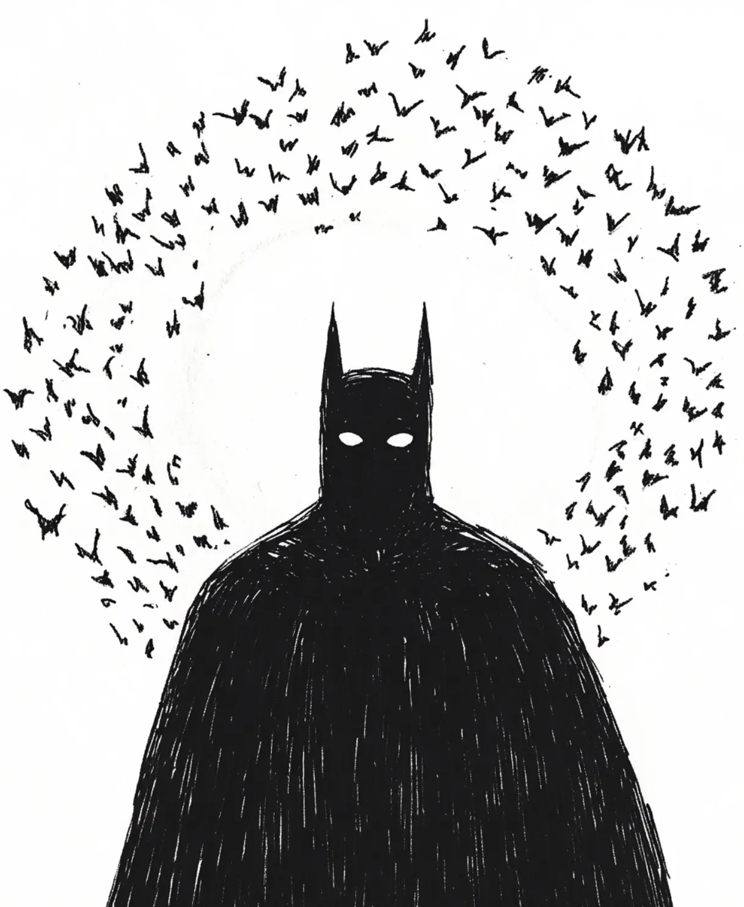

도시는 썩은 과일처럼 뭉크러져 악취를 풍겼다.
[The city was mashed like rotten fruit, reeking of stench.]
그는 가장 높은 첨탑의 가고일 위에 서 있었다. 검은 망토가 밤바람에 펄럭였고, 그의 머리 위로는 칠흑 같은 어둠의 소용돌이가 휘몰아치고 있었다.
[He stood atop the gargoyle of the highest spire. His black cape fluttered in the night wind, and above his head, a swirl of pitch-black darkness raged.]
골목길의 건달들은 위를 올려다보며 공포에 질려 뒷걸음질 쳤다. “저길 봐! 어둠의 사도가 박쥐 떼를 거느리고 있어!”
[The thugs in the alley looked up and backed away, frozen in terror. “Look! The Apostle of Darkness commands the bats!”]
그들의 눈에는 그것이 지옥에서 소환된 군대처럼 보였을 것이다. 초자연적인 위엄, 압도적인 카리스마. 하지만 그들은 진실을 몰랐다.
[To their eyes, it must have looked like an army summoned from hell. Supernatural dignity, overwhelming charisma. But they didn’t know the truth.]
그의 망토 안쪽, 유틸리티 벨트 세 번째 주머니에 어머니가 몰래 넣어둔 ‘꿀 꽈배기’가 녹고 있다는 것을.
[That inside his cape, in the third pocket of his utility belt, the ‘honey twist’ snack his mother had secretly packed was melting.]
“젠장, 저리 가!” 그는 이빨 사이로 작게 으르렁거렸다.
[”Damn it, go away!” he growled softly between his teeth.]
머리 위를 맴도는 것은 지옥의 군단이 아니라, 당분에 환장한 굶주린 과일 박쥐들이었다. 놈들은 끈적한 꿀 냄새를 맡고 미친 듯이 달려들고 있었다.
[What circled above was not a legion of hell, but hungry fruit bats crazy for sugar. They smelled the sticky honey and were diving in frantically.]
찍!
[Squeak!]
따뜻하고 묽은 액체가 그의 콧등 위로 툭 떨어졌다. 박쥐의 배설물이었다.
[A warm, watery liquid splattered onto the bridge of his nose. Bat droppings.]
그는 미동도 하지 않았다. 움직이면 폼이 안 나니까.
[He didn’t flinch. Moving would ruin the pose.]
지상의 악당들은 그의 부동심(不動心)에 경외감을 느끼며 무기를 버리고 도망쳤다.
[The villains on the ground, awestruck by his immobility, dropped their weapons and fled.]
그는 눈물을 머금고 다짐했다. 다음번 순찰 때는 절대 간식을 챙기지 않으리라.
[Holding back tears, he swore. On the next patrol, he would absolutely not pack snacks.]